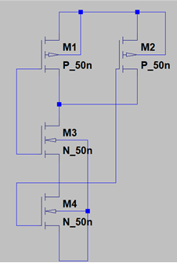
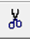
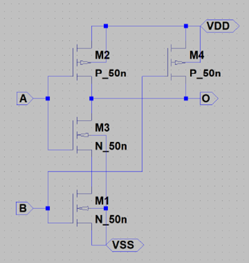

2NAND 回路のシンボル作成
次に、2NAND 回路のシンボルを作成します。手順はインバータ回路と同様です。
1. 2NAND 回路の準備
すでに作成した「2NAND.asc」の回路を開き、シンボル化の準備を行います。
電源やグランドの消去
2NAND 回路からも、電源(VDD)やグランド(GND)のシンボルを削除します。
Delete キーもしくは  を押して、消したい電源や配線をクリックします。削除後、回路図は図のように電源と不要な配線が消去された状態になります。
入出力ピンの設定
電源やグランドを削除したら、2NAND 回路にも適切に入出力ピンを設定します。
PIN の配置が終了すると図のようになります。
回路の保存
2NAND 回路のシンボルを作成する前に、回路図を「2NAND_sch」という名前で保存します。テキストには「2NAND_sch.asc」と書かれていますが、「asc」は入力する必要はありません。
2. シンボルの作成手順
メニューバーの Hierarchy > Open this sheet's symbol を選択し、シンボルを作成します。自動生成のメッセージが表示されたら、「はい」を選択してシンボルを生成します。
PIN 配置の調整
シンボルが生成されたら、ツールバーの PIN 移動ツール を使用して、PIN を使いやすい位置に調整します。調整後、必ず「2NAND_sch」として保存します。ここでの保存が不十分だと、正しいシンボルが作成されないため注意してください。